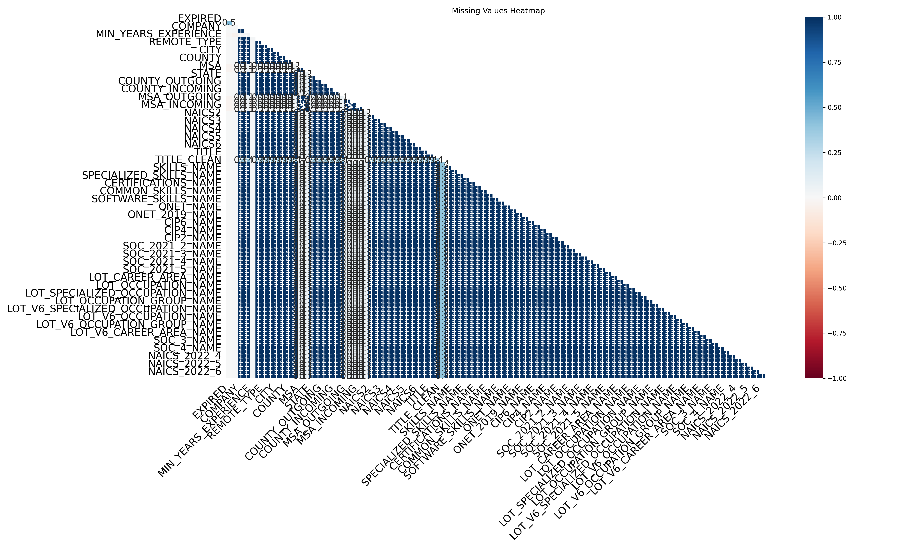
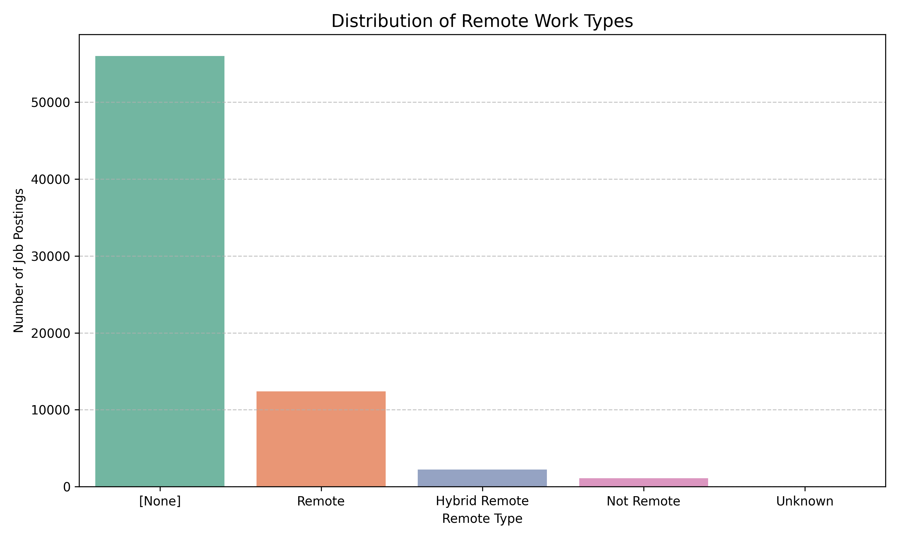
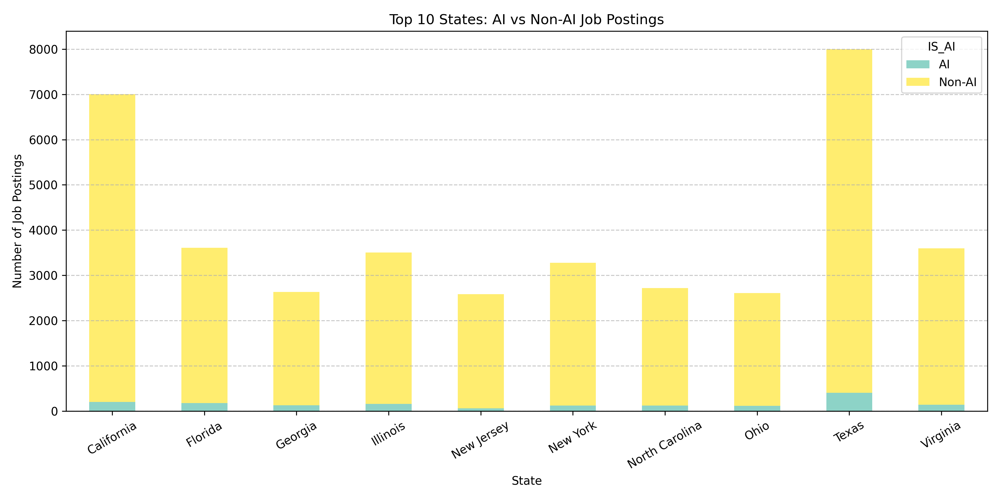
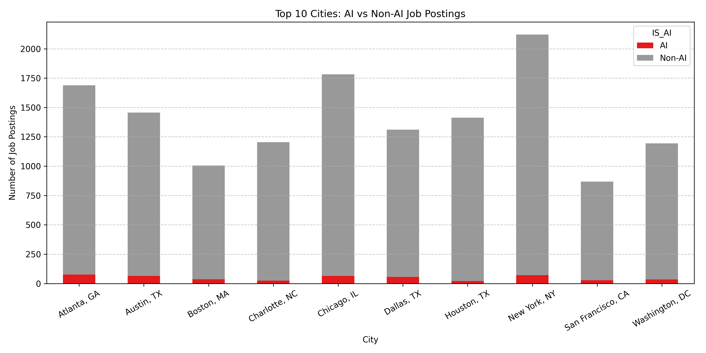
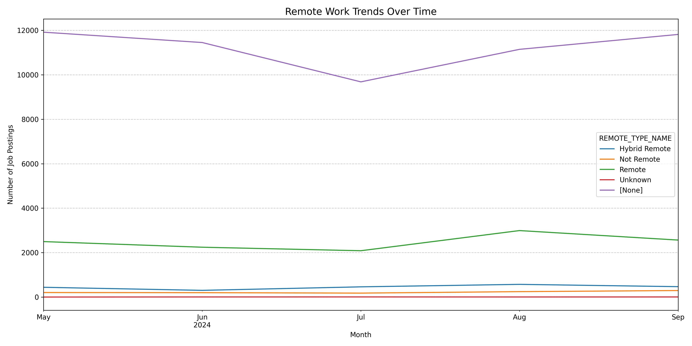
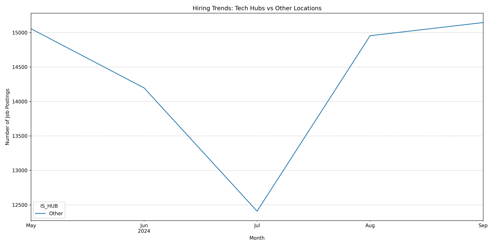
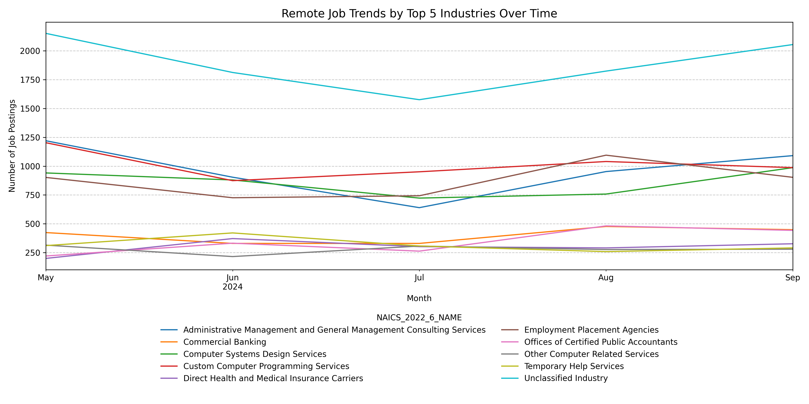
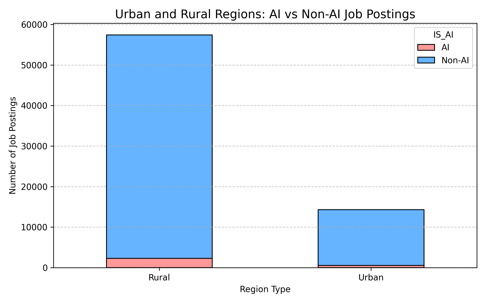
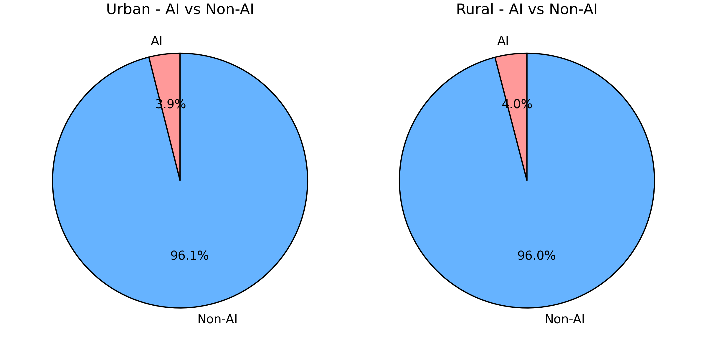

Code
import pandas as pd
df1 = pd.read_csv("./data/lightcast_job_postings.csv")Data Preparation and Exploratory Insights for Geographic and Remote Work Trends
This page provides an overview of the data cleaning and initial exploration process for the job market dataset.
Content will be added here.
# Define columns that are irrelevant or redundant for our analysis
columns_to_drop = [
# Tracking and metadata
"ID", "LAST_UPDATED_DATE", "LAST_UPDATED_TIMESTAMP", "DUPLICATES",
"URL", "ACTIVE_URLS", "ACTIVE_SOURCES_INFO", "SOURCE_TYPES", "SOURCES",
# Company raw info
"COMPANY_RAW", "COMPANY_IS_STAFFING",
# Raw or text-heavy fields
"TITLE_RAW", "BODY",
# Modeled / derived fields
"MODELED_EXPIRED", "MODELED_DURATION",
# Educational levels (redundant versions)
"EDUCATION_LEVELS", "EDUCATION_LEVELS_NAME",
"MIN_EDULEVELS", "MIN_EDULEVELS_NAME", "MAX_EDULEVELS",
# Redundant NAICS / SOC codes
"NAICS_2022_2", "NAICS_2022_2_NAME",
"NAICS_2022_3", "NAICS_2022_3_NAME",
"SOC_2", "SOC_3", "SOC_5"
]
# Drop columns, ignore if a column is missing
df1.drop(columns=columns_to_drop, inplace=True, errors="ignore")
# Display the first few rows to confirm
df1.head()
# Drop columns with >50% missing values
df1.dropna(axis=1, thresh=len(df1) * 0.5, inplace=True)
if "SALARY" in df1.columns:
df1["SALARY"] = df1["SALARY"].fillna(df1["SALARY"].median())
df1["DURATION"] = df1["DURATION"].fillna(df1["DURATION"].median())
categorical_columns = ["REMOTE_TYPE_NAME", "COMPANY_NAME", "MAX_EDULEVELS_NAME"]
for col in categorical_columns:
if col in df1.columns:
df1[col] = df1[col].fillna("Unknown")
df1.info()#improve
df1["EMPLOYMENT_TYPE_NAME"] = df1["EMPLOYMENT_TYPE_NAME"].replace({
"Part-time (≤ 32 hours)": "Part-time (≤ 32 hours)",
"Part-time / full-time": "Part-time / Full-time"
})
df1["EMPLOYMENT_TYPE_NAME"] = df1["EMPLOYMENT_TYPE_NAME"].fillna("Unknown")
df1["EMPLOYMENT_TYPE_NAME"].value_counts()remote_counts = df1["REMOTE_TYPE_NAME"].value_counts()
plt.figure(figsize=(10,6))
sns.barplot(
x=remote_counts.index,
y=remote_counts.values,
palette="Set2"
)
plt.title("Remote Type Distribution")
plt.ylabel("Number of Job Postings")
plt.xlabel("Remote Type")
plt.grid(axis='y', linestyle='--', alpha=0.7)
plt.tight_layout()
plt.savefig("figureswxw/remote_type_distribution.png", dpi=300)
plt.show()
import os
import pandas as pd
import matplotlib.pyplot as plt
import seaborn as sns
df1["IS_AI"] = df1["NAICS_2022_6_NAME"].fillna("").str.contains("AI|Artificial Intelligence", case=False) | \
df1["LOT_OCCUPATION"].fillna("").str.contains("AI|Artificial Intelligence", case=False)
df1["IS_AI"] = df1["IS_AI"].map({True: "AI", False: "Non-AI"})top_states = df1["STATE_NAME"].value_counts().head(10).index
df_top_states = df1[df1["STATE_NAME"].isin(top_states)]
pivot_states = df_top_states.groupby(["STATE_NAME", "IS_AI"]).size().unstack(fill_value=0)
pivot_states.plot(kind="bar", stacked=True, figsize=(12,6), colormap="Set3")
plt.title("Top 10 States: AI vs Non-AI Job Postings")
plt.ylabel("Number of Job Postings")
plt.xlabel("State")
plt.xticks(rotation=30)
plt.grid(axis='y', linestyle='--', alpha=0.7)
plt.tight_layout()
plt.savefig("figureswxw/top_states_ai_nonai.png", dpi=300)
plt.show()
top_cities = df1["CITY_NAME"].value_counts().head(10).index
df_top_cities = df1[df1["CITY_NAME"].isin(top_cities)]
pivot_cities = df_top_cities.groupby(["CITY_NAME", "IS_AI"]).size().unstack(fill_value=0)
pivot_cities.plot(kind="bar", stacked=True, figsize=(12,6), colormap="Set1")
plt.title("Top 10 Cities: AI vs Non-AI Job Postings")
plt.ylabel("Number of Job Postings")
plt.xlabel("City")
plt.xticks(rotation=30)
plt.grid(axis='y', linestyle='--', alpha=0.7)
plt.tight_layout()
plt.savefig("figureswxw/top_cities_ai_nonai.png", dpi=300)
plt.show()
if "POSTED" in df1.columns:
df1["POSTED_DATE"] = pd.to_datetime(df1["POSTED"], errors='coerce')
df1 = df1.dropna(subset=["POSTED_DATE"])
df1["POSTED_MONTH"] = df1["POSTED_DATE"].dt.to_period("M")
trend = df1.groupby(["POSTED_MONTH", "REMOTE_TYPE_NAME"]).size().unstack(fill_value=0)
trend.plot(figsize=(14,7))
plt.title("Remote Work Trends Over Time", fontsize=14)
plt.ylabel("Number of Job Postings")
plt.xlabel("Month")
plt.grid(axis='y', linestyle='--', alpha=0.7)
plt.tight_layout()
plt.savefig("figureswxw/remote_trend_over_time.png", dpi=300)
plt.show()
else:
print("POSTED column not found in dataset.")
df1["IS_HUB"] = df1["CITY_NAME"].apply(lambda x: "Hub" if x in ["San Francisco", "Austin", "Boston"] else "Other")
pivot_hub = df1.groupby(["POSTED_MONTH", "IS_HUB"]).size().unstack(fill_value=0)
pivot_hub.plot(figsize=(14,7))
plt.title("Hiring Trends: Tech Hubs vs Other Locations")
plt.ylabel("Number of Job Postings")
plt.xlabel("Month")
plt.grid(axis='y', linestyle='--', alpha=0.7)
plt.tight_layout()
plt.savefig("figureswxw/techhub_vs_other_trend.png", dpi=300)
plt.show()
top_industries = (
df1.groupby("NAICS_2022_6_NAME").size()
.sort_values(ascending=False)
.head(10)
.index
)
df_top_ind = df1[df1["NAICS_2022_6_NAME"].isin(top_industries)]
df_top_ind["POSTED_DATE"] = pd.to_datetime(df_top_ind["POSTED"], errors='coerce')
df_top_ind = df_top_ind.dropna(subset=["POSTED_DATE"])
df_top_ind["POSTED_MONTH"] = df_top_ind["POSTED_DATE"].dt.to_period("M")
pivot = df_top_ind.groupby(["POSTED_MONTH", "NAICS_2022_6_NAME"]).size().unstack(fill_value=0)
pivot.plot(figsize=(14,7))
plt.title("Remote Job Trends by Top 5 Industries Over Time", fontsize=14)
plt.ylabel("Number of Job Postings")
plt.xlabel("Month")
plt.grid(axis='y', linestyle='--', alpha=0.7)
plt.legend(
title="NAICS_2022_6_NAME",
loc='upper center',
bbox_to_anchor=(0.5, -0.15),
ncol=2,
frameon=False
)
plt.tight_layout()
plt.savefig("figureswxw/remote_trend_top5_industry.png", dpi=300)
plt.show()
urban_cities = [
"New York", "Los Angeles", "Chicago", "Houston", "San Francisco",
"Austin", "Boston", "Dallas", "Seattle", "Washington", "Atlanta"
]
df1["CITY_NAME_CLEAN"] = df1["CITY_NAME"].str.split(",").str[0].str.strip().str.title()
df1["Urban_Rural"] = df1["CITY_NAME_CLEAN"].apply(
lambda x: "Urban" if x in urban_cities else "Rural"
)
print(df1["Urban_Rural"].value_counts())if {"Urban_Rural", "IS_AI"}.issubset(df1.columns):
pivot_urban = df1.groupby(["Urban_Rural", "IS_AI"]).size().unstack(fill_value=0)
ax = pivot_urban.plot(
kind="bar",
stacked=True,
figsize=(8, 5),
color=["#ff9999", "#66b3ff"],
edgecolor="black"
)
ax.set_title("Urban and Rural Regions: AI vs Non-AI Job Postings", fontsize=14)
ax.set_ylabel("Number of Job Postings")
ax.set_xlabel("Region Type")
ax.set_xticklabels(ax.get_xticklabels(), rotation=0)
ax.grid(axis='y', linestyle='--', alpha=0.7)
plt.tight_layout()
plt.savefig("figureswxw/urban_rural_ai_nonai_bar.png", dpi=300)
plt.show()
else:
print("Required columns are missing. Please check your dataset.")
import matplotlib.pyplot as plt
if {"Urban_Rural", "IS_AI"}.issubset(df1.columns):
pivot_urban = df1.groupby(["Urban_Rural", "IS_AI"]).size().unstack(fill_value=0)
fig, axes = plt.subplots(1, 2, figsize=(8, 4))
for ax, region in zip(axes, ["Urban", "Rural"]):
data = pivot_urban.loc[region]
ax.pie(
data,
labels=data.index,
autopct='%1.1f%%',
startangle=90,
colors=["#ff9999", "#66b3ff"],
wedgeprops={'edgecolor': 'black'}
)
ax.set_title(f"{region} - AI vs Non-AI")
plt.tight_layout()
plt.savefig("figureswxw/urban_rural_ai_nonai_pie_combined.png", dpi=300)
plt.show()
else:
print("Required columns are missing. Please check your dataset.")